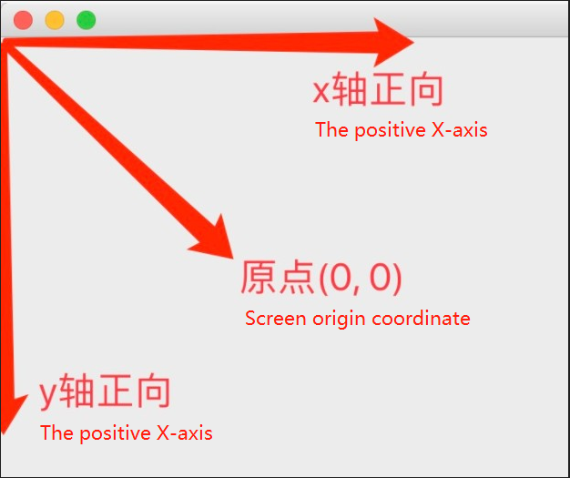
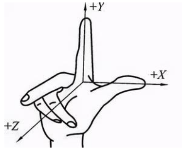
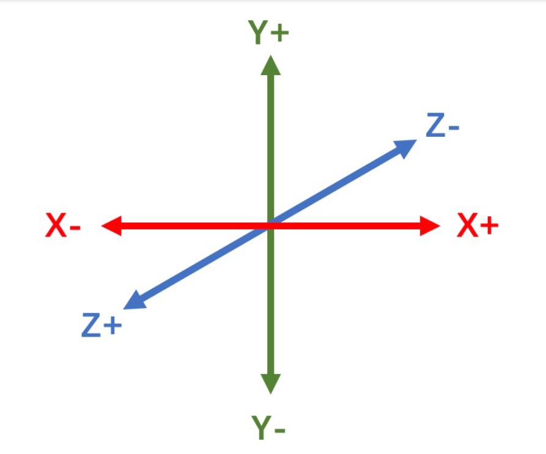
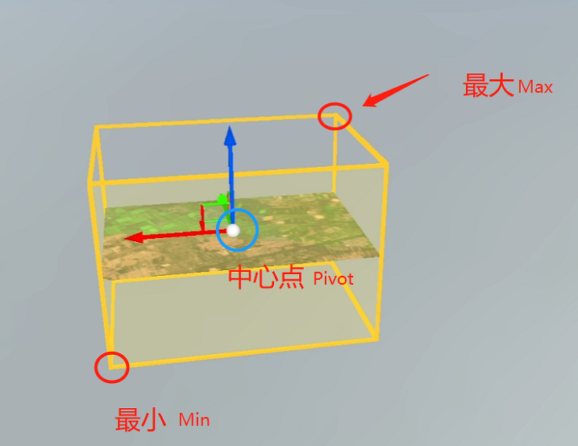
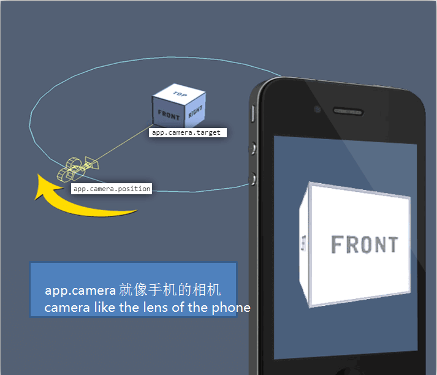
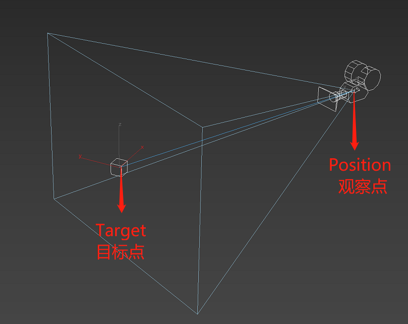
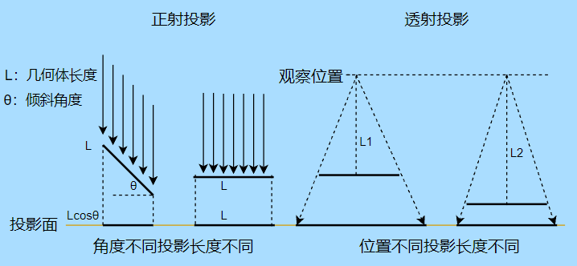
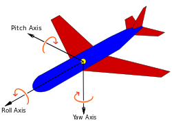

二次开发中的基础概念介绍
一、常见坐标解释
目前云渲染支持四类坐标系，这几种坐标系可以调用相关函数进行转换。
-
屏幕坐标：
以显示器屏幕显现的位置信息构成屏幕坐标系，通常以像素为单位 。
屏幕坐标系为三维坐标系，但显示屏是二维平面的，（x,y）表示位置信息，屏幕左上角为（0,0）点【原点】，X值从屏幕左侧往右侧递增，Y值从上往下递增。以1920*1080的屏幕分辨率为例，右下角为（1920,1080）.X、Y的可视值域取决于你当前显示设备的分辨率,超出视野之外依然有数值，只是不显示在场景窗口中。z值表示深度。
模型的屏幕坐标：（x，y）用分辨率宽高表示。
UI元素的屏幕坐标：同上。
输入的鼠标位置和触摸位置，其屏幕坐标为横纵由分辨率表示，Z值默认为0.

-
场景坐标：
以X、Y、Z值表示的空间直角坐标系。用来表示三维场景中的模型UI元素的物理位置。
即东西方向为X轴，正东方向为X轴正值；南北方向为Y轴，正北方向为Y轴正值；上下方向为Z轴，上方向为Z轴正值。
如下图：


注意：如果我们把一个相机坐标放在我们认为场景坐标系的原点上，这时候相机坐标就等于场景坐标。场景坐标也可以称作为世界坐标。
-
地理坐标：
地理坐标系 (GCS) 使用三维球面来定义地球上的位置。以经度、维度、海拔高度表示的地理空间坐标系，例如WGS84、CGCS2000。
-
投影坐标：
投影坐标系在二维平面中进行定义。与地理坐标系不同，在二维空间范围内，投影坐标系的长度、角度和面积恒定。投影坐标系始终基于地理坐标系，而后者则是基于球体或旋转椭球体的。
在投影坐标系中，通过格网上的 x,y 坐标来标识位置，其原点位于格网中心。每个位置均具有两个值，这两个值是相对于该中心位置的坐标。一个指定其水平位置，另一个指定其垂直位置。这两个值称为 x 坐标和 y 坐标。采用此标记法，原点坐标是 x = 0 和 y = 0。
在等间隔水平线和垂直线的格网化网络中，中央水平线称为 x 轴，而中央垂直线称为 y 轴。在 x 和 y 的整个范围内，单位保持不变且间隔相等。原点上方的水平线和原点右侧的垂直线具有正值；下方或左侧的线具有负值。四个象限分别表示正负 X 坐标和 Y 坐标的四种可能组合。
投影坐标系通常也称为本地坐标系。
二、常见名词解释
在二次开发的过程中你可能会遇到地理信息相关的一些专业名词，请在开发前仔细阅读以下名词解释：
- WKT：由国际组织OCG，即开放地理空间联盟制定的一种文本标记语言，全称为Well-known text，
用于表示矢量几何对象、空间参照系统之间的坐标转换，使用WKT能够很好的与其它系统进行数据交换，譬如转换地理坐标为世界坐标。目前大部分支持空间数据存储的数据库都支持这种方式。
-
BBox：即3D Bounding Box，3D物体的包围盒，用于表示三维物体坐标的取值边界，取值方法如下：
在已经渲染成功的视频流场景中坐标至少选择两个点，
例如： [ 488654.71875, 2890294.5, 5.0999999046325684 ],[ 494277.71875, 2789172, -0.0010937500046566129 ]，分别取各坐标点最小和最大的X、Y、Z值，分别再组成两个点：
"BoundsMin": [ 488654.71875, 2789172, -0.0010937500046566129 ]
"BoundsMax": [ 494277.71875, 2890294.5, 5.0999999046325684 ]
其中由坐标值较小的那个点即BoundsMin[minX,minY,minZ]，沿对应X、Y、Z坐标轴延伸至maxX、maxY、maxZ对应的值，延伸后的三条线组成的空间盒子就是BBox，如下图：

-
相机：即Camera，就像大家拍照使用的相机，用来确定观察三维场景的视角。
在计算机图形学中常用来定义用户和场景的相对位置和朝向，和我们真实世界人的眼睛一样。
相机包含两个重要的位置参数：观察点（镜头位置 position）；目标点（被拍摄物体位置 target），如下图：


-
观察点：摄像机镜头位置的初始坐标[X,Y,Z]（眼睛位置）
-
目标点：摄像机镜头对准的被观察物体的坐标位置[X,Y,Z]
-
观察点和目标点距离：摄像机镜头位置距离被观察物体的距离，单位是米
-
视口：即Viewport可视窗口，浏览器某块矩形绘图区域，用来展示视频流；可以对一个窗口进行切分，在同一个窗口显示分割屏幕的效果，以便显示多个可视窗口。
-
投影：即Projection，生活中的物体都是三维的，但是人的眼睛只能看到正面，不能看到被遮挡的背面，三维几何体在人的眼睛中的效果就像相机拍摄的一张二维照片，你看到的是一个2D的投影图。我们在计算机中看到的3D画面其实就是计算机把三维空间中的物体从世界坐标系
通过各种复杂计算投影到屏幕坐标系并显示在视口中。投影其实就是空间几何体转化为一个二维图的过程，不同的投影方式对应不同的投影算法。
常见投影方式分正射投影和透视投影，在机械设计、工业设计领域常用正射投影（平行投影），游戏场景（AirCloud云渲染场景）常用透视投影（中心投影）。
透视投影：又叫中心投影，距离镜头近的物体大，距离镜头远的物体小。类似人类眼睛观察真实世界。
正射投影：又叫平行投影，无论距离相机镜头多远，投影后的物体大小尺寸不变。投影尺寸取决于观察角度。

-
欧拉角：即Euler angles，由瑞士数学家欧拉提出，指物体绕坐标系三个坐标轴（X、Y、Z）的旋转角度，
用来表示三维物体的基本旋转，旋转分以下两种情况：
静态旋转：即绕世界坐标系的三个轴旋转，三维物体在旋转过程中坐标轴保持静止；ACP渲染的场景中的物体旋转默认为静态旋转。
动态旋转：即绕物体坐标系的三个轴旋转，三维物体在旋转过程中坐标轴随着物体一起做相同旋转，即场景视角也旋转。
想象一下飞机，Yaw指水平方向的机头航向，绕Y轴旋转；Pitch指与水平方向的夹角，绕X轴旋转；Roll指飞机的翻滚，绕Z轴旋转。如下图：

-
俯仰-Pitch：上下旋转角度，欧拉角向量的X轴，取值范围：[-90~+90]
-
航向-Yaw：左右旋转角度，欧拉角向量的Y轴，取值范围：[-180~+180]
-
翻滚-Roll：翻滚角度，欧拉角向量的Z轴
<br>
-
WMTS服务：全称OpenGIS Web Map Tile Service，即Web地图切片服务，由国际组织开放地理空间联盟(OCG)提出的一种缓存技术标准。
提供了一种采用预定义图块方法发布数字地图服务的标准化解决方案，可以通过RESTful方式访问，是WMS服务的改进版，服务端可缓存且访问性能更优。
-
MVT服务：Mapbox vector tile，即Mapbox 矢量瓦片服务，是Mapbox（地图盒子）提供的一种矢量瓦片数据编码服务。
三、常用几何对象
以下是API中常用的几何对象，包含点、线、面、三维形状和一些标注等。
-
Polyline：折线/多段线，用来创建仅包含一段或多段直线的形状。创建后的Polyline可以设置多种显示效果，以及多种应用。
-
ODline：OD线，即Origin-Destination Line，用来描述起点和终点的连线，通常表示两点之间的关系，如航班线路、人口迁徙、交通流量、经济往来等。
-
Polygon：多边形，用来创建包含不少于三个边的多边形。
-
3DPolygon：三维多边形，三维空间的多面体。
-
TileLayer：三维图层对象，即3DT文件。
-
Cesium3DTileset： 3D Tiles是由Cesium创立的用于流式传输大规模异构3D地理空间数据集的开放规范。在DTS平台中泛指为符合这种规范的数据及服务。
-
HeatMap：热力图，如建筑物受力分析区域等。
-
HighlightArea：高亮区域，如高亮显示建筑物某一区域等。
-
RadiationPoint：辐射圈，模拟显示辐射效果，如展示一个区域的污染源影响范围等。
-
CustomMesh：自定义三角网格，模拟流体等。
-
CustomObject：自定义对象，可以操作TileLayer中的Actor对象，对其进行平移缩放着色等。
-
Beam：光流粒子/光束，可以在场景中模拟显示车流方向等。
-
Tag：标签，可以在场景中添加一个包含图像和文字的标签。（停止维护，建议使用Marker）
-
Marker：标注，更加强大的标签对象，支持更多的属性设置。
-
Marker3D：三维动态标注，可以在场景中添加动态标注。
-
CustomTag：自定义标签，支持对Tag进行更多的样式设置。
四、常用文件格式
ShapeFile：后缀为.shp，美国环境系统研究所公司（ESRI）开发的一种空间数据文件格式，是地理信息软件界的一个开放标准，也是一种重要的数据交换格式。
可以描述几何对象，点、折线和多边形，也可以存储建筑、河流、湖泊等空间对象的属性、几何形状与位置信息。
3DT：后缀为.3dt，飞渡科技DTS高渲染平台针对数字孪生体场景的特点和需求，独创了专属的标准数字孪生数据库——3D Twins Scenes Database（简称为3DT）。
3DT可以实现数据的优化和加速，增强用户在DTS高渲染平台中的操作体验。